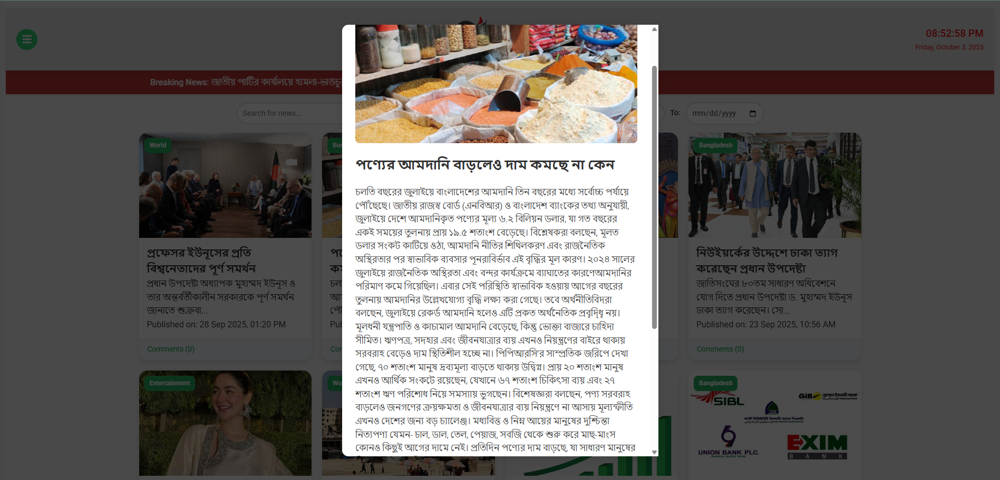

Doinik Bangla Kagoj


Project Overview
Doinik Bangla Kagoj is a feature-rich, fully responsive news application designed to provide a premium reading experience. It functions as a complete digital newsroom, featuring real-time search, dynamic category filtering, a trending story carousel, and a customized administrative dashboard. The platform is optimized for performance and accessibility across desktop and mobile devices.
The Challenge
The primary challenge was managing a high volume of dynamic content entirely on the client side while maintaining a "snappy" feel. I needed to implement complex pagination and real-time search filtering logic that could handle large arrays of news objects. Additionally, creating a secure-feeling administrative workflow for content creation and ticker management within a local-storage-based architecture required precise state management.
Key Features
- Content Management System (CMS): Admins can create, edit, and delete articles directly through the UI, including dynamic image handling via the FileReader API.
- Advanced Filtering & UX: Real-time keyword search, category sorting (Politics, Tech, Sports), and date-range filtering for deep archival access.
- Dynamic Breaking News Ticker: A marquee-style notification system that admins can update and adjust for speed in real-time.
- Interactive Engagement: A session-aware comment section allowing users to interact with individual news stories.
- Persistent Dark Mode: A native implementation of dark/light theme switching that persists across sessions using localStorage.